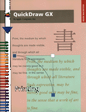

QuickDraw GX Printing
Inside Macintosh: QuickDraw GX Printing shows you how to implement printing in the QuickDraw GX environment. This book exps how to support printing-related dialog boxes and events, implement a print loop, customize printing features, and more.Before reading this book, you need to be familiar with the general concepts of QuickDraw GX, as described in Inside Macintosh: QuickDraw GX Objects.
Inside Macintosh: QuickDraw GX Printing starts by introducing the basiccepts you need to implment QuickDraw GX printing features in your applications. The book then describes
- color printing features, which define the minimum feature set that you must support
- page formatting and dialog box customization
- advanced printing features, which allow you to implement advanced customization
Availability: Click below to obtain Inside Macintosh: QuickDraw GX Printing Extensions and Drivers in any of the following formats.

|
Acrobat (3909K) |